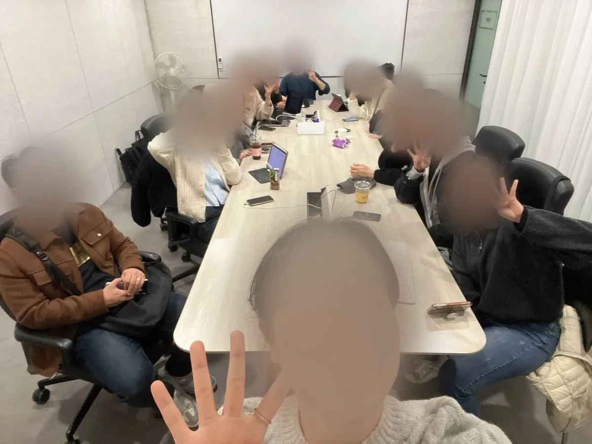
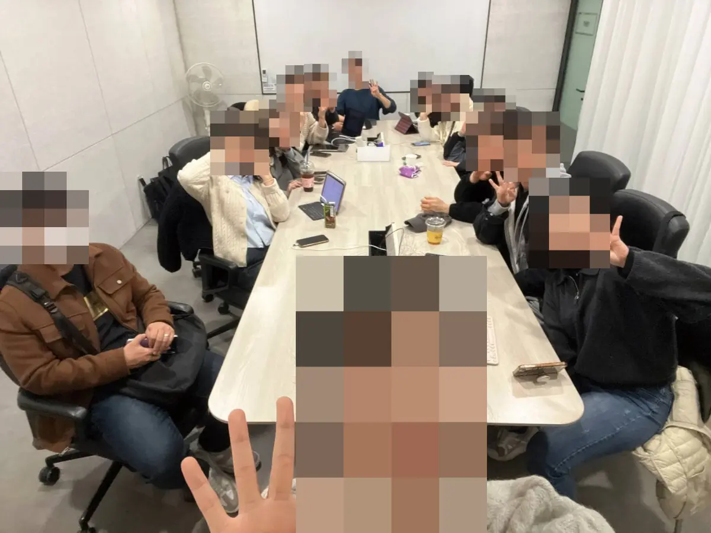
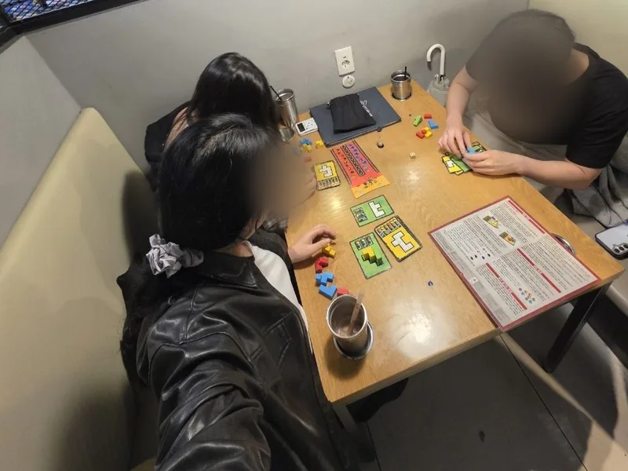
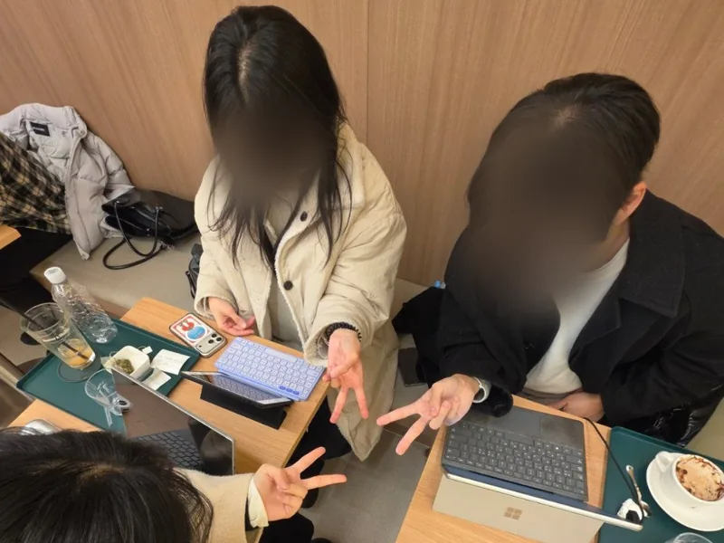
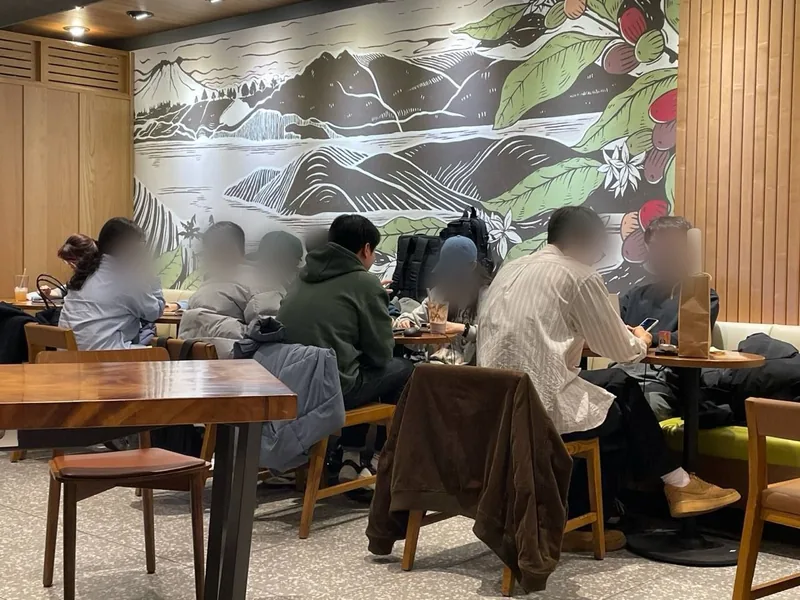

1기 ACTIVITY LOG
아리아드네 1기 활동 기록
6주 동안 우리가 AI로 만든 것들
- 언제2026년 8월 17일 주에 OT를 하고, 추석 연휴 주를 쉬어 가며 10월 5일 주에 마무리했어요. (OT 포함 7번의 모임, 6주 동안 평일 저녁 90분)
- 누가대학생 파트 6명, 취준생 파트 6명 (파트별 운영진 1명 포함)
- 어떻게60분은 내 과제·자소서로 직접 실습하고, 20분은 같은 고민 가진 사람들끼리 이야기하면서 매주 노션에 기록을 남겼어요.
- 참가비0원. 스터디룸 대관비만 1/N로 똑같이 나눴어요.
PART 01
대학생 파트: 내 수업 자료로 시험 대비부터 공부 툴까지
1주차“그래서 과제에 AI 어디까지 써도 돼요?” 기준부터 잡기
- 제일 먼저 헷갈렸던 학교 과제·시험의 AI 활용 선(표절·보안 기준)부터 같이 정했어요.
- 각자 이번 학기 전공·교양 강의안 PDF와 필기 노트를 한곳에 모아서 세팅했어요.
2주차내 수업 자료 넣어서 AI 과외받기
- 실제 강의안과 강의 녹음에서 발췌한 내용을 넣고, 이해 안 가는 전공 개념을 쉽게 풀어서 설명받는 연습을 했어요.
- AI가 가끔 그럴듯하게 틀린 말(할루시네이션)을 하는 걸 걸러내는 법도 함께 확인했어요.
3주차시험 직전 요약 노트와 예상 문제 뽑기
- 시험 범위 PPT가 너무 많아서 막막했는데, 핵심만 압축한 요약 노트를 만들었어요.
- 교수님 출제 스타일에 맞춰 객관식·서술형 예상 문제를 직접 뽑아보고 오답 정리까지 했어요.
4주차리포트와 팀플 자료 뼈대 한 번에 잡기
- 리포트 주제 잡기부터 목차 짜기, 참고 자료 요약까지 막히던 구간을 풀어봤어요.
- 팀플 회의록 정리와 발표 대본 초안 잡는 법을 바로 써먹을 수 있게 정리했어요.
5주차코딩 몰라도 나만의 공부 툴 만들기
- 개발 지식 없이 Claude, ChatGPT, Gemini 3가지 AI 도구를 활용해 바이브코딩(AI와 대화하며 코딩하기)으로 나만의 시험·과제 대비 툴을 만들어봤어요.
- 교수님의 강의 스타일, 이전 학기 시험 자료(족보), 이번 학기에 받은 자료를 넣고, 그 학기의 중간·기말고사 방식(시험, 과제)에 맞춰 정리했어요.
- 완성한 툴에서 출제 의도에 맞는 예상 시험 문제와 과제 작성 방향을 만들 수 있게 했어요.
- 무료 버전으로도 쓸 수 있는 범위에서 기반을 잡는 것에 초점을 맞췄어요.
- 파트원들이 각자 만든 툴을 서로 시연해 보고 피드백을 나눴어요.
6주차6주치 포트폴리오 완성과 회고
- 매주 쌓아둔 활동일지와 과목별 산출물을 노션 링크 하나로 정리했어요.
- 6주 동안 가장 효과 좋았던 팁들을 공유하면서 1기를 마무리했어요.
PART 02
취준생 파트: 채용공고 분석부터 자소서·AI 면접 녹화까지
1주차“자소서에 AI 어디까지 써도 될까?” 선 긋기와 경험 꺼내기
- 개인정보나 지원 기업 정보가 유출되지 않게 조심할 점부터 확인하고, ‘내 목소리’를 지키는 기준을 잡았어요.
- 관심 있는 채용공고 2~3개를 골라두고, 그동안의 대외활동·인턴·프로젝트 경험을 꺼내서 정리했어요.
2주차채용공고(JD) 제대로 뜯어보기
- 공고의 자격요건과 우대사항에서 중요한 직무 키워드를 뽑아냈어요.
- 내 경험 중 어떤 것을 연결해야 서류에서 눈에 띌지 파트원들과 같이 짝지어봤어요.
3주차내 경험을 ‘진짜 내 말투’ 자소서로 다듬기
- AI에게 맡겼을 때 나오는 뻔하고 기계적인 문장을 걷어내는 작업을 했어요.
- 내 실제 경험 위주로 초안을 쓴 다음, 외부 동아리·스터디와 연계해 초청한 현업 실무자에게 1:1로 문장 첨삭을 받았어요.
4주차AI 면접 맛보기와 꼬리 질문 대비하기
- 요즘 많이 보는 AI 역량검사·AI 면접이 어떻게 진행되는지 직접 체험해 봤어요.
- 실제 AI 면접 방식, 기업 인사팀의 예상 질문, 원하는 채용공고의 내용, 현업에서 필요한 지식을 찾아 정리하고, 바이브코딩으로 나만의 AI 면접 툴을 만들었어요.
- 지원하려는 회사의 직무와 채용공고를 넣으면 예상 면접 질문을 만들어 주는 툴이에요. 내 자소서를 바탕으로 들어올 만한 꼬리 질문과 압박 질문까지 뽑아 답변 뼈대를 잡았어요.
5주차실전 모의 면접 녹화하고 피드백 나누기
- 만든 툴을 음성 앱과 연동해, 실제 면접처럼 말로 질문을 주고받는 모의 면접을 진행하고 영상을 녹화했어요.
- 녹화본을 다 같이 보면서 시선 처리, 말버릇, 답변 논리까지 솔직하게 피드백을 주고받았어요.
6주차취업 준비 포트폴리오 정리와 완주 회고
- 공고 분석부터 자소서 완성본, 면접 피드백 기록까지 노션 페이지 하나에 모았어요.
- 혼자 취준할 때와 비교해 6주 동안 가장 달라진 점을 이야기하며 수료했어요.
FIELD
1기 현장
아리아드네 1기 스터디 현장이에요. 참여자 얼굴은 블러 처리했어요.







SECOND CHAPTER
2기 모집 중이에요
지원 마감은 11월 30일(월)이에요. 커리큘럼과 1기 참가자 후기는 모집 사이트에서 볼 수 있어요.
2기 지원하기 ↗
모집 사이트 보기